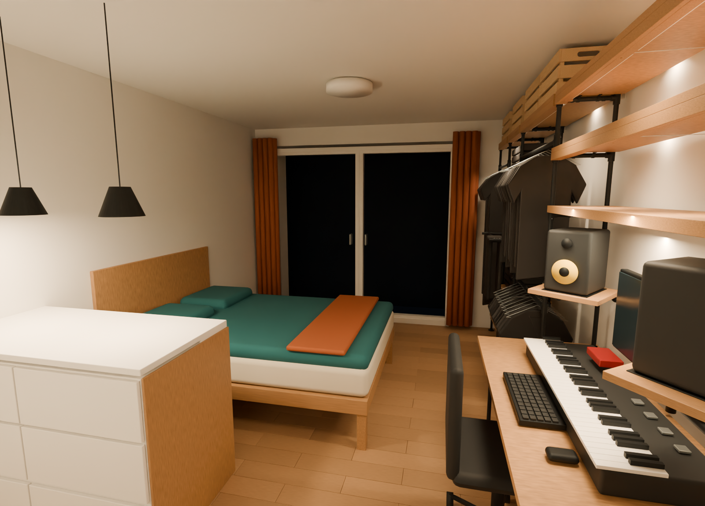

Berlin studio / design V18
A room that works.
A plan you can build.
Design locked · interactive guide in progressThe approved apartment, with a shared pipe-frame desk, angled speaker shelves and no TV. Ceiling light off; shelf and kitchen lights on.

The interactive 3D model, step-by-step assembly drawings and linked bill of materials are being added here. This address will stay the same.
View the repository and progress →